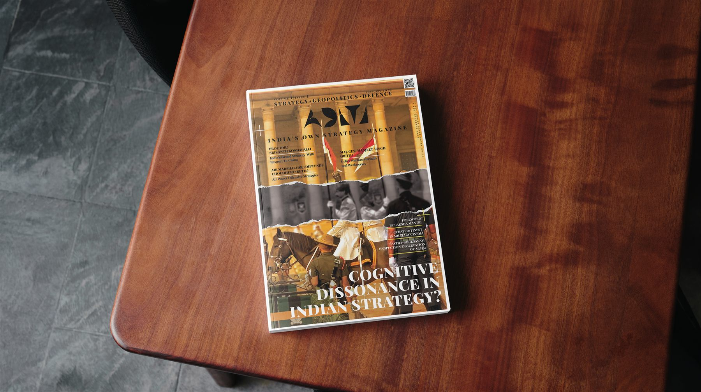
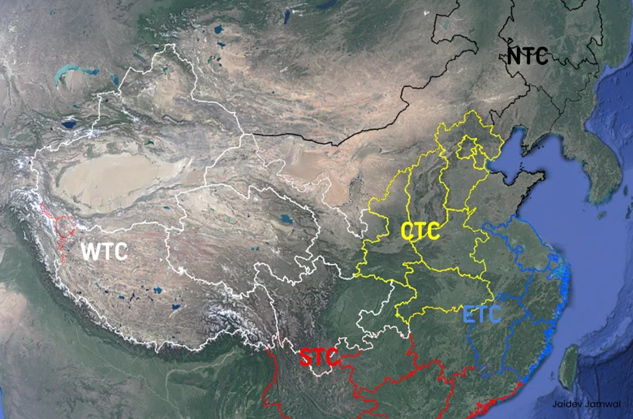

Armament
Capabilities, force structure, industry, and deterrent power.
Loading ADITI
The Publication
It does not report what happened. It asks why it happened, what it means strategically, and what India should think about it.
The name is the framework: Armament, Doctrine, Initiative, Terrain, and Integration. Every dispatch is examined through these five pillars.

The ADITI Lens
Capabilities, force structure, industry, and deterrent power.
The concepts that decide when power is held, signalled, or used.
Political will, tempo, escalation choices, and strategic timing.
Geography, borders, seas, societies, and contested depth.
Jointness across theatres, technology, institutions, and national power.
Current Issue / Volume I
Each ADITI issue begins with a contradiction in Indian strategic thinking and examines it through Armament, Doctrine, Initiative, Terrain, and Integration.
A study of the distance between India's strategic ambition, institutional method, and operational choices.
Explore the issueArticle Store

China's cognitive warfare attempts to influence perception, morale, strategic narratives, media, and decision-making before kinetic conflict.
Read freeThe North East has moved beyond a single insurgency frame; the task now is political legitimacy and social cohesion.
Read freeSea power is not only about hulls. It is theatre awareness, industrial rhythm, and the will to impose costs.
Buy dispatchIndia cannot treat terrain, logistics, information, and political signalling as separate problems.
Buy dispatchVaccine capacity, labs, supply chains, and export credibility are instruments of national resilience.
Buy dispatchBuilt For Depth
Officers, analysts, researchers, students of strategy, and policymakers: read ADITI when the news cycle is not enough.